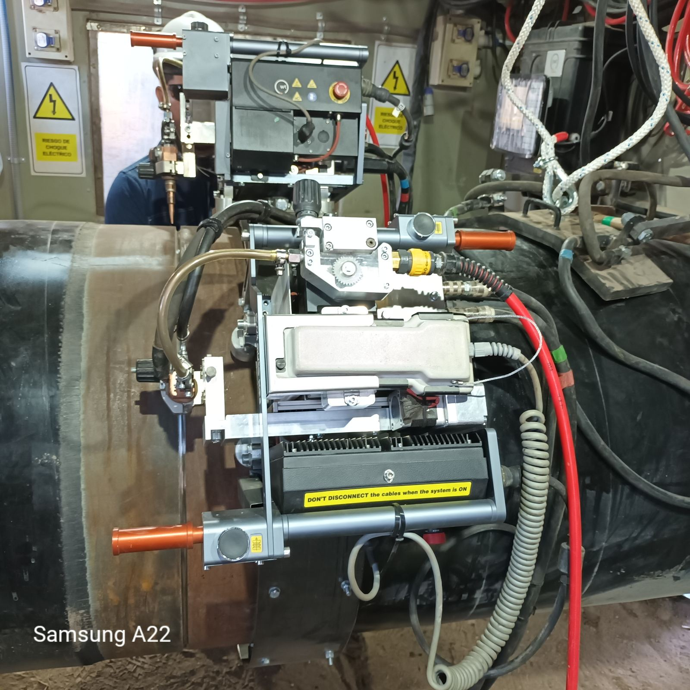
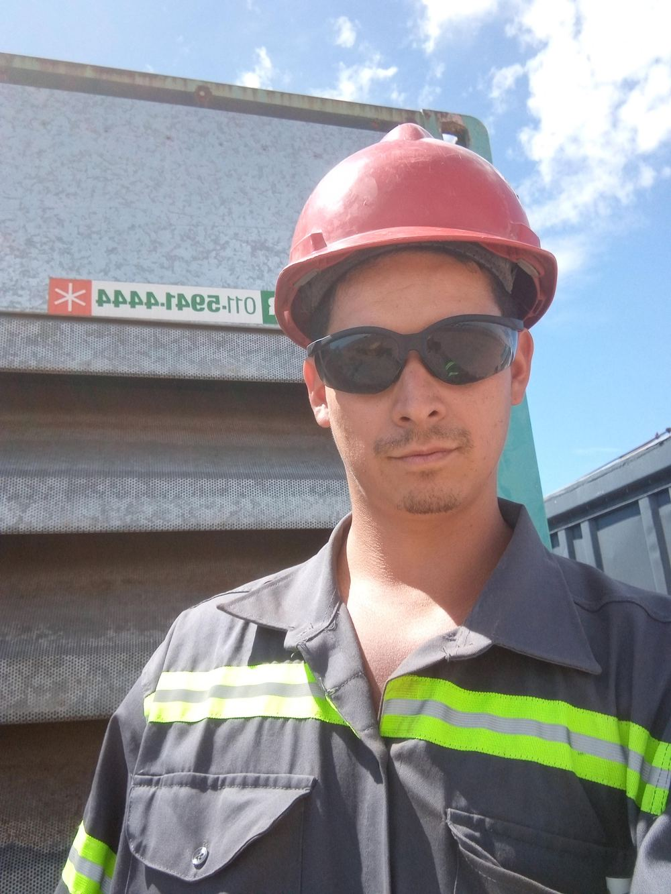
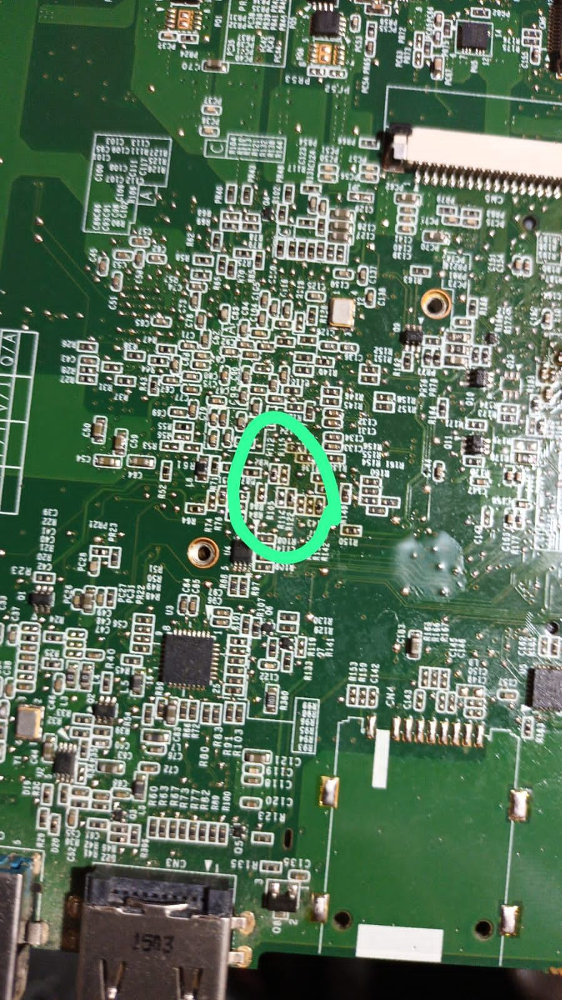
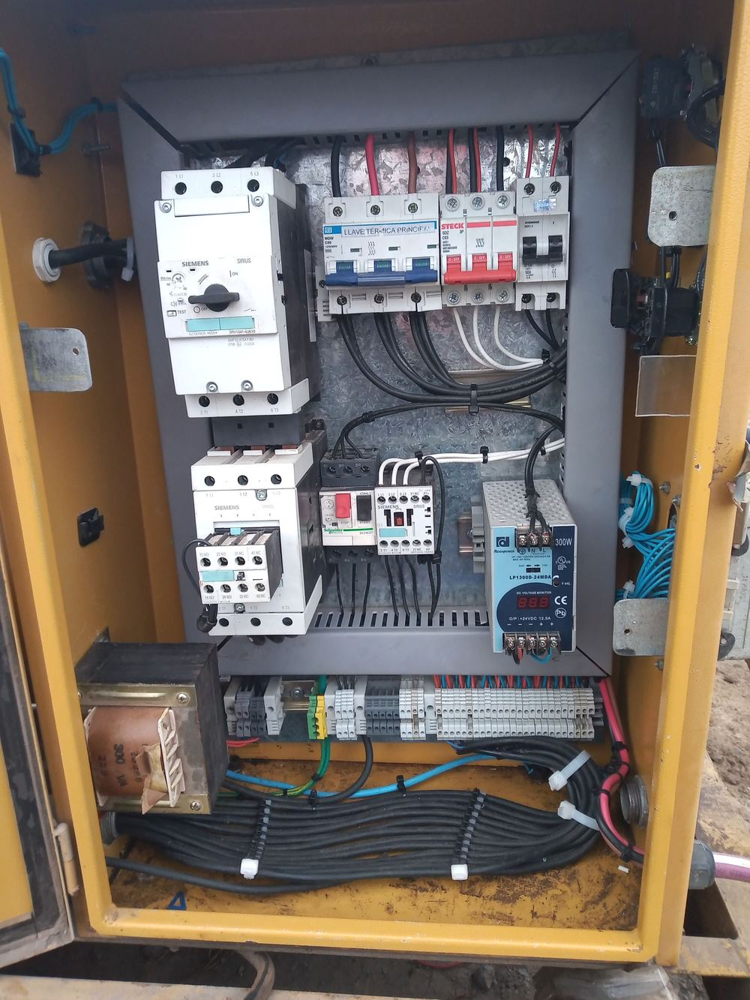
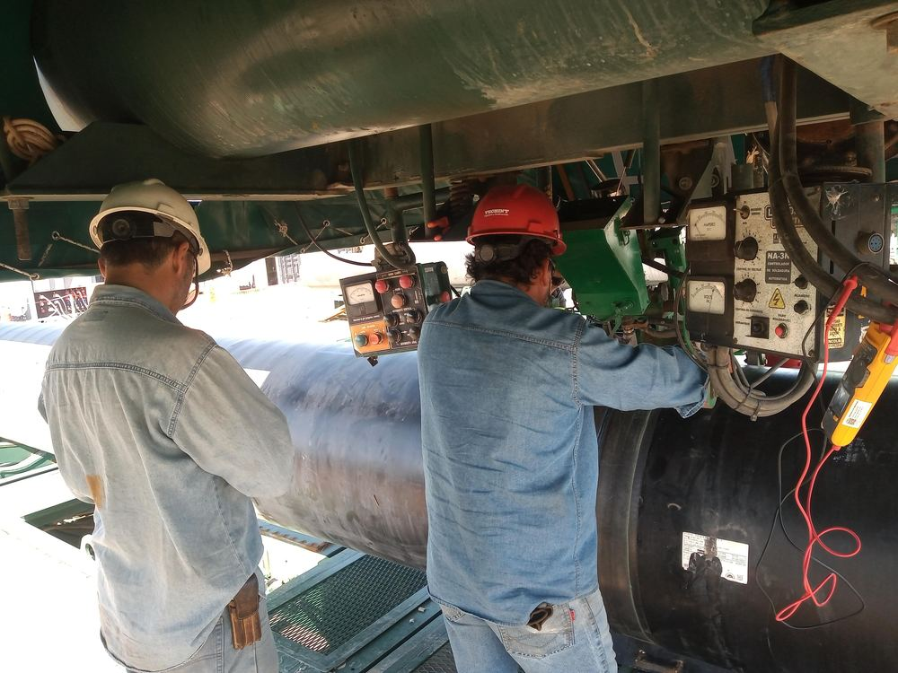
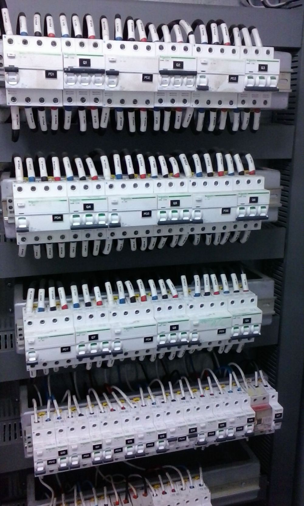

Perazzo Ariel

Nombre: Perazzo Ariel
Perfil: Electricidad industrial, microelectrónica, inspector.
Correo: arielalejandro.1993@gmail.com
Teléfono: (+54) 11 4940-6541
Aptitudes
Acerca de mí
Estos 8 años de experiencia liderando me han permitido desarrollar una amplia capacidad de razonamiento analítico como así también de pensamiento estratégico, permitiendo llevar a cabo tareas de alto rendimiento en distintos proyectos. Gasoducto Noreste Argentino (GNEA), imponiendo duras pruebas como supervisor eléctrico industrial. Gasoducto Néstor Kirchner (GPNK) dándome la gran experiencia de poder liderar un gran grupo de trabajo compuesto por 63 personas, pudiendo diversificarme en múltiples tareas desafiantes: electricidad industrial, hidráulica, neumática, mecánica, control y calidad, etc.
Gracias a estos proyectos, así como a muchos otros en los que participé, pude ampliar mi capacidad de adaptabilidad y de gestión de grupos de trabajo.
Soy una persona proactiva, con amplia experiencia en diversas industrias y con muchas ganas de recibir nuevos retos que me lleven al límite de mis conocimientos y me permitan seguir desarrollándome profesionalmente.
Resumen
Experiencias y formaciones.
Formación
Técnico Electrónico
2007 - 2010
Escuela de Educación Técnica N° 5 Raúl Scalabrini Ortiz, Tigre.
Inspector de Equipos
2018
Dictado en Igarreta Máquinas IMASA.
Especializado en calidad y control de maquinaria.
Ingeniería Electrónica
2011
UTN Facultad Regional de Buenos Aires (FRBA). Sin completar.
Curso de Crosby
2018
Inspección y mantenimiento de elementos de izaje.
Programación en Python
2024
Curso de programación.
Programación en HTML
2024
Curso de programación.
Diseño 3D con Blender
2023
Curso de diseño 3D.
Gestión de base de datos TANGO
2018
Impresión 3D
2025
Diseño y creación de piezas con impresora 3D.
Curso de Supervisor de Seguridad Privada
2025
Dictado por Fundación Instituto Securion, homologado por CEPRES (Centro de Estudios para la Prevención y la Seguridad).
Experiencia Profesional
SM Service Laboratorio de Microelectrónica
2013 - 2015
Boulogne Sur Mer 77, Gral. Pacheco, Buenos Aires.
- Aplicar conocimiento avanzado de microelectrónica para fabricar prototipos de placa según se requiera.
- Liderar grupo de trabajo técnico para organizar y analizar problemáticas de diseño.
- Manejo de herramientas especializadas de tratamiento térmico, destinadas a realizar reballing a microchips BGA.
Techint-Panedile UTE
2015 - 2016
Proyecto Gasoducto Noreste Argentino (GNEA), obradores en Ing. Juárez y Las Lomitas, provincia de Formosa.
- Liderar grupo de trabajo especializado en distintas áreas (eléctrica, hidráulica, mecánica) para el armado y puesta en marcha de la planta de soldadura doble junta.
- Coordinación con especialistas en montaje e izaje para ubicar geográficamente elementos de gran porte.
- Control y calidad de sistema de soldadura según norma aplicada.
- Liderar grupo de mantenimiento especializado.
- Control de calidad realizado con especialistas de Ensayos No Destructivos (CAEFE S.A.) por medio de gammagrafía.
Contreras Hermanos S.A.
2018 - 2020
Lobería 251, Don Torcuato, Buenos Aires.
- Comercio exterior y mercado local. Presupuestado de materiales de obra.
- Inspección de maquinaria especializada en gasoducto, generadores y de soldadura. Inspección y control total de los depósitos.
- Liderar y coordinar con profesionales el asesoramiento de maquinaria de soldadura y generadores para abastecer los obradores.
- Liderar grupo de mantenimiento especializado en mecánica pesada y electricidad.
Techint-Shell
2021 - 2022
Proyecto ARG-Ducto Shell, obrador en Cinco Saltos, provincia de Río Negro.
- Liderar grupo de trabajo especializado en distintas áreas (eléctrica, hidráulica, mecánica) para el armado y puesta en marcha de la planta de soldadura doble junta.
- Coordinación con especialistas en montaje e izaje para ubicar geográficamente elementos de gran porte.
- Control y calidad de sistema de soldadura según norma aplicada.
- Liderar grupo de mantenimiento especializado.
- Inspección, control y supervisión realizados en conjunto con Energía Argentina S.A. (ENARSA).
Techint Compañía Técnica Internacional S.A.C.I.
2022
Avenida de los Constituyentes 3702, Gral. Pacheco, Buenos Aires.
- Liderar grupo de trabajo especializado para realizar reparación y mantenimiento hidráulico, mecánico, eléctrico y neumático de la planta de soldadura doble junta.
- Realización, en conjunto con especialistas de Lincoln Electric, de la puesta en marcha y protocolos de soldadura.
- Relevamiento y presupuestado de consumibles para la obra.
- Dimensionado de generadores según planeamiento.
- Planeamiento predictivo.
Techint-Sacde UTE
2022 - 2023
Proyecto Gasoducto Néstor Kirchner (GPNK).
- Liderar grupo de trabajo especializado en distintas áreas (eléctrica, hidráulica, mecánica) para el armado y puesta en marcha de la planta de soldadura doble junta.
- Coordinación con especialistas en montaje e izaje para ubicar geográficamente elementos de gran porte.
- Control y calidad de sistema de soldadura según norma aplicada.
- Liderar grupo de mantenimiento especializado.
- Control de calidad realizado con especialistas de Ensayos No Destructivos (ENOD) por medio de gammagrafía.
Techint-Sacde UTE VMOS
Mayo 2025 - Septiembre 2025
Proyecto Vaca Muerta Oil Sur (VMOS).
- Encargado de mantenimiento de equipo de soldadura automática QAPQA.
- Coordinación con especialistas para el montaje del equipo automático.
- Control y calidad de sistema de soldadura según norma aplicada.
- Liderar grupo de mantenimiento especializado.
- Programación en tiempo real de los equipos, utilizando software especializado.
Servicios Realizados
- Todo
- Robótica y soldadura
- Microelectrónica
- Reparaciones
- Calidad y control

Microelectrónica
Microsoldadura SMD utilizando máquinas infrarrojas y de calor directo.

Cuadro eléctrico biseladoras
Reparación de circuitos de maniobra y de electroválvulas hidráulicas.

Gasoducto GPNK
Control de parámetros en conjunto con inspector, para realizar la calificación de soldadores SAW.


{kind=link}
{kind=link}
{kind=link}
{kind=link}
{kind=link}
{kind=link}
{kind=link}
{kind=link}
{kind=link}
{kind=link}
{kind=link}
{kind=link}
{kind=link}

{kind=link}
Cuadro eléctrico
Armado y cableado de cuadros eléctricos en 110Vca, 220Vca, 380Vca y 440Vca, además de tensiones de maniobra de 12V y 24V.
{kind=link}
{kind=link}
{kind=link}
{kind=link}
{kind=link}
{kind=link}
{kind=link}
Portafolio
- Todo
- Techint-Shell, oleoducto
- Techint-Sacde, VMOS
- Techint-Sacde, GPNK
- Techint-Panedile, GNEA
- Contreras Hnos.
{kind=link}
{kind=link}
{kind=link}
{kind=link}
{kind=link}
{kind=link}
{kind=link}
{kind=link}
{kind=link}
{kind=link}
{kind=link}
{kind=link}
{kind=link}
{kind=link}
{kind=link}
{kind=link}
Preguntas Frecuentes
1. ¿Estás dispuesto a reubicarte de país y/o provincia?
Sí, sin ningún inconveniente.
2. ¿Hace cuánto tiempo trabajás en la industria?
Hace 8 años.
3. ¿A qué te dedicás cuando no estás trabajando en relación de dependencia?
Tengo un microemprendimiento dedicado a la microelectrónica, además de invertir en acciones y otras actividades.
4. ¿Conocés de mantenimiento industrial?
Sí, realicé todo tipo de trabajos y mantenimientos en empresas: hidráulico, neumático, eléctrico hasta media tensión y mecánico.
5. ¿Tuviste gente a cargo? Si es así, ¿de cuántas personas?
Sí, tuve gente a cargo; el grupo más grande que lideré fue de 63 personas.
6. ¿Qué idiomas conocés?
Además del castellano nativo: inglés oral y escrito básico, con nivel de interpretación intermedio.
7. ¿Manejás el paquete Office?
Sí, realicé todo tipo de trabajos con el paquete completo de Office.
Contacto
Ubicación
Benavídez, Tigre, Buenos Aires.
Teléfono
+54 11 4940-6541
Correo
arielalejandro.1993@gmail.com